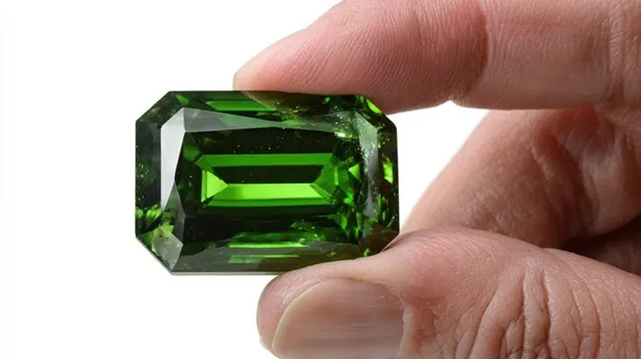
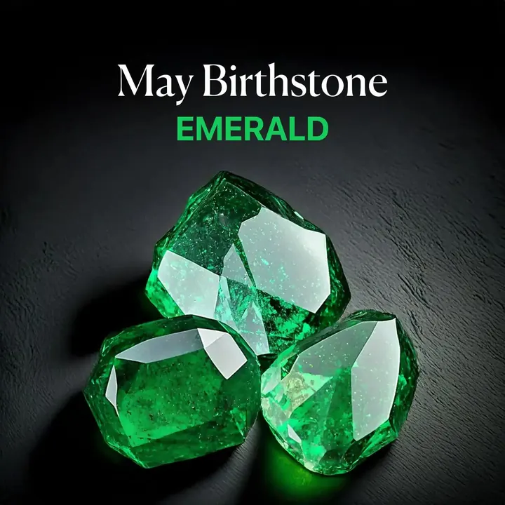

祖母綠注油：幾乎每一顆都「動過手腳」
祖母綠的裂隙天生多，注油是寶石界的「護膚」——但油也有好壞之分，看懂注油，才不會被「無油」兩個字騙。


核心定義
注油（oil treatment）是把無色油（雪松油、石蠟油等）加熱或加壓滲入祖母綠裂隙的傳統工藝，目的有三：讓裂縫「隱形」（折射率接近，光線不散射）、提升顏色飽和度、增加透明度。據估計，市面九成以上的祖母綠都經過注油。
為什麼需要注油？因為祖母綠天生多裂隙（結晶時地質應力造成），裂隙會讓光線散射、顏色發白。注油後，油填滿裂隙，光線順暢穿過，寶石瞬間「活」過來——這是寶石界公認的傳統優化，不是造假。
特徵與分類
| 處理 | 材料 | 接受度 |
|---|---|---|
| 無色油（傳統） | 雪松油/石蠟油 | 市場普遍接受 |
| 有色油 | 含綠色染料的油 | 不誠實，需標示 |
| 樹脂充填 | 合成樹脂（如 Opticon） | 市場接受但需揭露 |
| 無處理 | — | 極稀有、最貴 |
注油的「程度」比「有無」更重要：GIA 等機構把注油分為 None（無）、Minor（輕微）、Moderate（中度）、Significant（明顯）等，證書上清楚標示。輕微注油普遍接受；重度充填則影響價格與耐久（樹脂老化、油乾後裂縫再現）。
科學原理
注油的原理是「折射率匹配」：祖母綠折射率約 1.57–1.58，雪松油折射率接近（約 1.51–1.52），油填滿裂隙後，光線在裂隙處不再散射——裂縫「消失」了。而樹脂充填的折射率更高，甚至可提升顏色。
鑑定注油的方法：加熱探針（油會滲出）、紫外燈（部分油發螢光）、顯微鏡看裂隙內的反光與「閃片」。無色油最難察覺——所以實驗室的報告，才是判斷注油程度的最可靠依據。
鑑定與鑑別方法
- 顯微鏡找裂隙內油膜：干涉色、閃光
- 加熱針尖：油遇熱會滲出、冒泡
- 紫外燈：有色油與部分樹脂發螢光
- 看證書 Treatment 欄：None/Minor/Moderate/Significant
- 高價祖母綠務必實驗室檢測：確定是油還是樹脂
市場行情與保養建議
市場鐵律：祖母綠「無油」是稀有奢侈品——天然裂隙中沒有任何油或樹脂的祖母綠少之又少，價格可以是輕微注油的數倍。輕微注油是市場主流，價格合理、接受度高；重度樹脂充填則要打折，且需長期保養（重注）。
購買提醒：不要迷信「無油」兩個字——先確認證書、再看實物。很多商人口中的「無油」其實是「輕微注油」；真正的無油，價格與稀有度都寫在證書上。
常見誤區
注油是寶石界數百年的傳統優化，不改變寶石本質，市場普遍接受並要求誠實揭露。它是「護膚」，不是「整容換人」。
完全無油的祖母綠極罕見——市面「無油」多半是「未檢測」或「輕微注油」的話術。真無油，必有實驗室背書與天價。
冷知識
早在 18 世紀，歐洲寶石商就懂得用油改善祖母綠外觀。這項「老工藝」至今仍是祖母綠市場的標準流程。
注油祖母綠佩戴久了，油可能蒸發或老化，裂縫會再現——所以祖母綠需要定期「重注」保養，這是它嬌貴的原因之一。
反直覺觀點
油填裂隙改善外觀，但裂隙仍在——祖母綠怕熱、怕超音波（油會被震出）、怕化學品。注油是「美容與風險」的組合包。
裂隙多到需要重度充填的祖母綠，結構脆弱、油老化後難看——它比輕微注油便宜數倍，卻常被話術包裝成「高性價比」。看懂注油程度，才不會撿到燙手山芋。